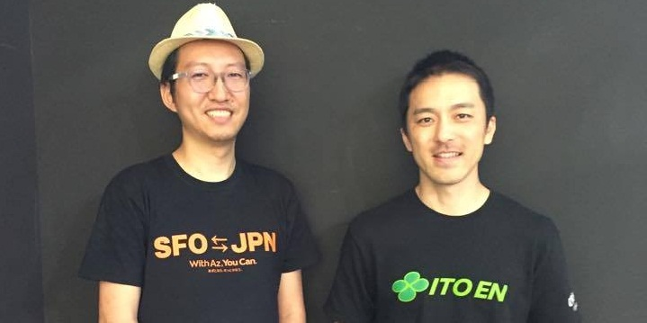

「それぞれの生き方を肯定しあえるコミュニティーを創りたい」伊藤園・角野賢一×東京カルカル・河原あず 茶ッカソン3周年対談
2017年5月で3周年を迎え、現在4年目の活動を行なっている茶ッカソン。
発起人である伊藤園の角野賢一と、茶ッカソン構想段階から関わっている東京カルチャーカルチャーの河原あずが、創業秘話から未来の構想まで、茶ッカソンへかける想いを語ります。
2人の出会いから茶ッカソンの誕生へ
角野賢一（以下K）
シリコンバレーで5年間の任期を終える直前、最後にもう一つ何かを成し遂げたいという思いがふつふつと湧いてきました。僕がシリコンバレー出会った起業家たちは、 私欲のためではなく、「世の中に良いインパクトを与えたい」という志を持って活動している人が多くて、そういう人に憧れてたんですよね。
当時シリコンバレーでは、アイデアソンやハッカソンが流行っていて、アントレプレナーやエンジニアがこぞって参加していました。伊藤園でも志を持った人を集めてハッカソンができないか？ と思い付き、当時エバーノートの日本法人会長だった外村さんに相談したところ「あずに相談してみたら？」とアドバイスをいただいたのが始まりです。
河原あず（以下A）
直接会ったことはなかったけど、ひょんなきっかけでFacebookでは繋がっていたんですよね。
K
2013年の秋に初めてお会いしました。Facebookを通してお互いの動向は確認していたので、すんなり繋がって。その後、あずさんがロケットスペースというシェアオフィスでイベントをした時にお茶を協賛しましたね。
A
当時はそこまで仲良しというわけでもなく……いきなり相談されましたね（笑）。戸惑いつつも、 伊藤園だからこそ実現できる意義を考えました。「お茶を飲みながら皆でディスカッションするアイデアソン」という絵がすんなり浮かんだ後、コンセプト作りに頭を抱えたんだけど、なぜかトイレに立った時に“茶ッカソン”という言葉が降りてきたんです！ すぐさま部屋に戻り、ホワイトボードに大きく“茶ッカソン”と書き出したことを覚えています。角野さんは、茶ッカソンという言葉を聞いた時はどんな感じでした？
K
衝撃的でしたよ！ 僕は営業だったので、コピーとかよく分からなかったけど、そんな僕でも「茶ッカソン」という言葉には強いものがあると感じました。覚えやすいし普通のハッカソンやアイデアソンとは違うと明確に分かる。もう一つ、英語の綴りでも、ハッカソン「Hackathon」という単語の頭にCをつけるだけで「Chackathon」になる。それもすごくよかった。
A
タイトルと同時に、「あなたの心を着火します」というリードも浮かびました。その後、現在の「現代版茶会」というフレーズもでき、どんどん世界観が出来上がっていきましたね。
K
結局イベントは満員御礼、立ち見が出るほどの大盛況でした。テーマは「サンフランシスコの人口の半数が無糖飲料を飲むようになるにはどうすれば良いか？」という伊藤園に関わるテーマで、実に多様な、質の高いアイデアが飛び出してきたのが印象的でした。
そこから僕は日本に帰任したのですが、シリコンバレーでは、人気ラーメン店のOrenchi Ramenや大和ハウス、 ヤマハ発動機やソニーなど、次々と企業とのコラボレーションが生まれたんですよね？
A
角野さんが帰任した後、後任の北米伊藤園・宮内栄一さんと、イベント単体として面白いことをやろうと半年くらい模索しました。そんな時に、1回目の茶ッカソンで審査員を依頼した人気ラーメン店、Orenchi Ramenの丸山良幸さんが、ラーメンをテーマにアイデアソンをやりたいと言っていたのを思い出したんです。次はアメリカ人にも参加して欲しいと思っていたので、シリコンバレーで爆発的な人気があったラーメンをテーマにすれば集客も見込める、 いける！と確信しましたね。
K
正直、宮内とあずさんが、アメリカのローカルの方を混ぜて英語でやるとは思っていませんでした（笑）
A
宮内さんの英語力とステージ度胸には助けられました。角野さんとだったらできてなかったかも（笑）。ともあれ、2回目も大盛況で、それ以降、企業と組んで、企業が持つテーマについてディスカッションする、というスタイルを確立していきました。茶ッカソンは場所やテーマの選び方でイベントのカラーが決まるので、1つ1つの案件を慎重に選んでいきましたね。
K
僕は日本に戻った後、特に意識して、人の繋がりを作ることに注力して、渋谷のヒカリエで IT関係の方とやったり、高校生とやったりと、回数を重ねていきました。その結果、参加者同士で起業したり、高校生がここでの出会いをきっかけに進路を決めたというような、参加者のその後の人生を変えるようなエピソードが生まれました。 茶ッカソンに参加した後はお〜いお茶しか買わなくなったという声も多々あり、伊藤園という企業に親しみを持つきっかけを作れたことも、とても嬉しいです。
転機となったのは「畳を敷いて座禅をする」というスタイルを取り入れたこと。僕が新しいことを始める時の動機は、いつも「カッコイイな！」という感覚なんです。最初にハッカソンをやりたいと思ったのも、エバーノートのオシャレなカフェテリアでハッカソンをしたらカッコイイだろうな、という安直な発想からスタート（笑）。僕の感覚的なところに、あずさんが中身を作ってくれたので、うまくはまったんですよね。
日本とシリコンバレー、離れた場所でのそれぞれの活動が発展し1つに繋がる
A
正直、角野さんが日本でやると聞いて、1人で大丈夫か？と心配する部分もありました（笑）だけど、 畳を敷いて座禅をするというアイデアを思い付いたのは革命ですよね。
K
畳と座禅というアイデアは、カマコンバレーが主催する禅ハックというイベントからヒントを得たんです。鎌倉で禅とハッカソンを組み合わせたイベントに参加した時に、大げさかもしれないけど、人生観が変わるような衝撃を受けた。同時に、自分もこういう体験を提供したいと強く思いました。次の日、お〜いお茶の茶殻を使って作られている、北一商店さんの「さらり畳」のことを思い出し、上司に懇願して60畳分を購入してもらいました。
Ａ
イベントって、どう非日常を作るかが重要なんです。角野さんの言う、新しい出会いや人生を変えるような衝撃体験というのは、日常と切り離された空間でこそ生まれやすい。そういう場所で 、一種の試練を乗り越える体験を共有すると強い繋がりができます。例えば、渋谷のヒカリエは日常空間なんだけど、そこに畳を敷き詰めることで非日常空間に様変わりする。舞台装置としては、発明です。何もない場所に畳を敷いて空間を作るっていうのは、茶ッカソンの発明だと胸を張って良いと思いますよ。まだ輸入できていないのですが、早くシリコンバレーにも畳が欲しいですね（笑）。
茶ッカソンの独自性と社会に与える価値
K
僕は、新しいアイデアは、フィーリングとロジックの掛け算で生まれると思うんです。茶ッカソンの強みは、エンジニア的な「ロジック」だけで考えるのではなく、座禅やお茶を通して人の感性に訴えかけられることです。これからの世の中を幸せに行きていくためには、感性は非常に重要なファクターになると思います。
A
茶ッカソンって、イベントでありコミュニティーなんですよね。そこが他のハッカソンとの大きな違いだと思います。それぞれの生き方や考え方を肯定し合える場所。それは千利休の考え方にも繋がっていると思うんですよね。相互理解と助け合い、それがコミュニティーの本質です。茶ッカソンというのは、そのコミュニティーを実現するための舞台なんです。
K
確かに、茶ッカソンの参加者の中には、公務員や整体師、Webデザイナーなどいろんな職業の人がいて、枠組みを超えてみんなで作業してアクションを起こすのが面白い。ありのままの自分が認められるという経験は、日々の生活の糧になりますよね。
A
3周年にあたり、茶ッカソンのコンセプトをリニューアルしたのですが、そこで生まれたTEA BRINGS NEW ( )というコピーがあります。最後の( )は、 参加者それぞれの心の中に新しい何かがもたらされるようにという思いが込められています。よく、「アイデアソンなんだから、アウトプットや結果は出ているんですか？」と聞かれます。もちろん結果を生むことは重要だけど、茶ッカソンの視点で考えると、それすらも部分でしかないんですよね。本質は、成果物ではなく、それぞれの心の中で何が生まれて、何がもたらされたかという”( )”の中身なんです。
未来の茶ッカソンの向かう姿とは
K
『茶を嗜みながら人が集まりコミュニケーションを取り、感覚を豊かにしていく場』という理念は今後も変わりません。客観的に見ても、茶ッカソンという取り組みはこれからの社会にとって必要なものだと思うんです。だから僕には、この取り組みを世の中に広めていく使命がある。今年、畳分けというシステムを導入したので、きちんと理念を繋いで、良いコミュニティーを作っていきたいですね。最終的には、世界中に畳を持って行って茶ッカソンをやりたい。伊藤園にとっても、お茶の文化、お茶の心を広げるという大事な仕事になると思います。
A
角野さんは”ルール”っていうけど、もしかしたら、杓子定規に考えすぎる必要はないかもしれないですよね。角野賢一が作りたい世界観を実現するというのが、茶ッカソンのあるべき姿じゃないかなと。それが結果的に、茶ッカソンの概念やアイデアを広めていくことに繋がるんだと思います。角野さんは、それを伝えるために世界をまわる旅人になればいいんじゃないかな？（笑）
K
そうかもしれない（笑）。お〜いお茶を見るとちょっと勇気がでる、茶ッカソンでの体験を通して、そんな風に思える人が増えれば嬉しいです。お茶しようよ！と集まって始まる議論が面白い世の中を作っていく、そんな流れが作れたらいいな。
A
僕は「文化」を作りたい。それぞれの生き方の指針や大事にしている考え方を持ち寄って一つの場を作ることが文化になり、様々な形で広がっていく。茶ッカソンもそういう場として育てたいですね。
この3年間で、コミュニティーのベースやアウトプットへの道筋ができ、ようやく茶ッカソンは、スタート地点に立てました。これからどういう風に育てていくか、今が重要な時期なのかなって、僕は思います。
（文責：河原あず（東京カルチャーカルチャー） 構成：河野真弥）